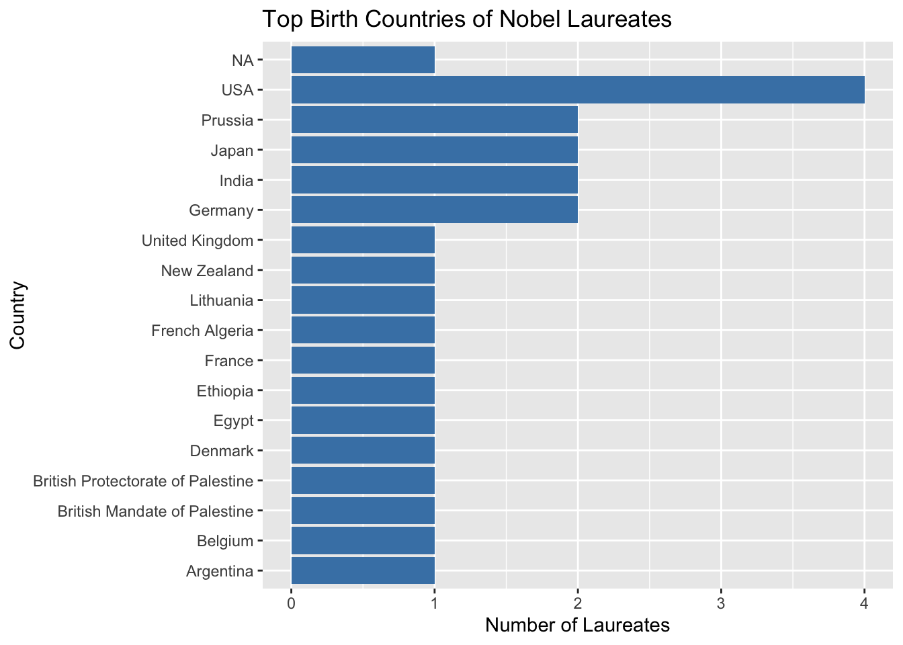
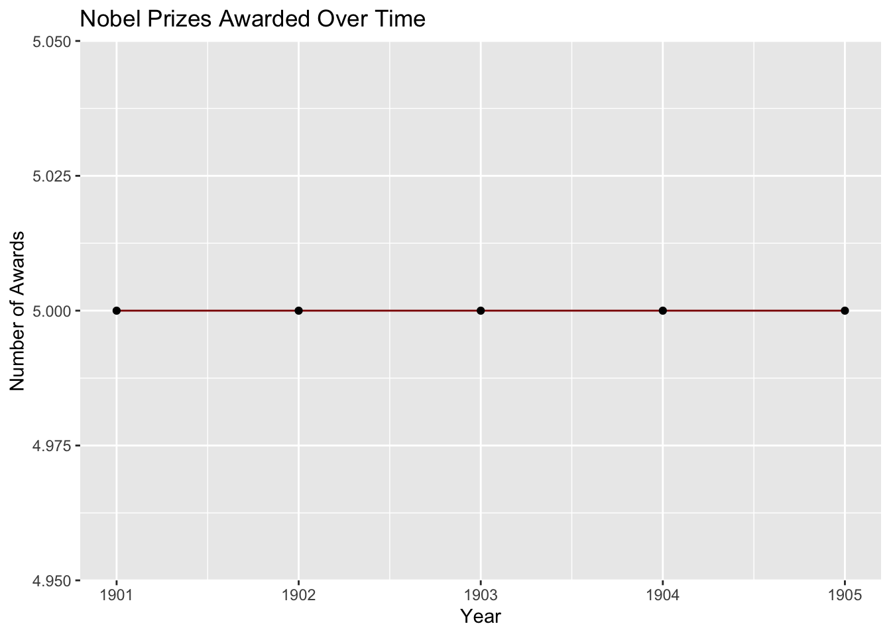
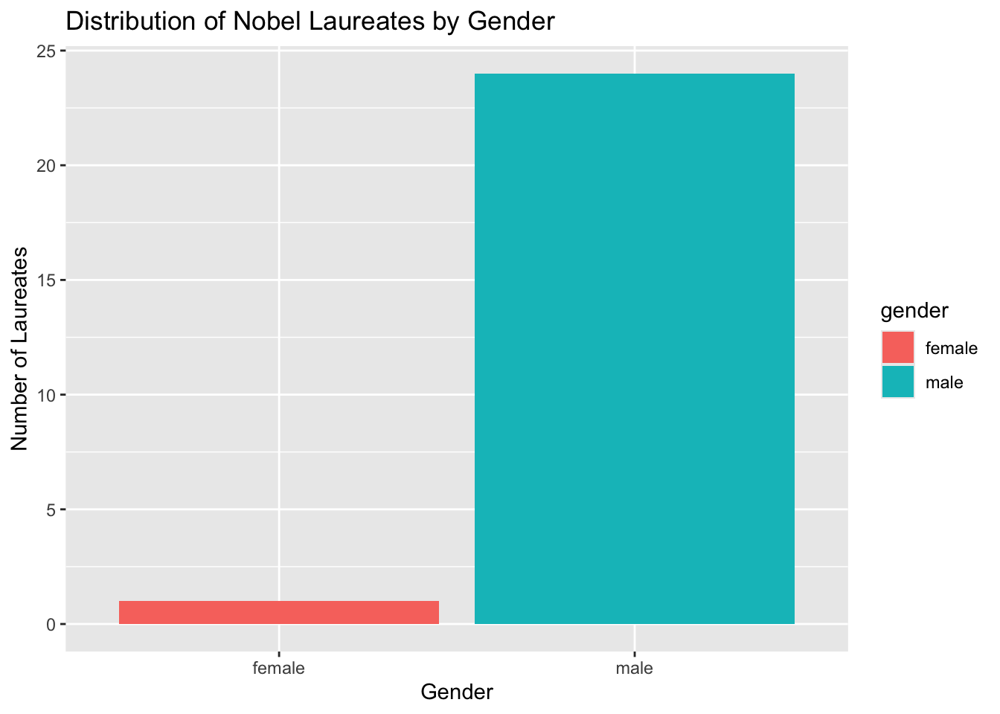

For this assignment, I worked with JSON data obtained from the Nobel Prize public API. The first step was to explore the structure of the API responses to understand how the data was organized and identify the sections that contained information about Nobel Prizes and Nobel laureates. While exploring the API, I examined the metadata and pagination details to better understand how records were returned and how the data could be retrieved for analysis.
After collecting the data, I used R and the tidyverse packages to transform the nested JSON structures into tidy data frames. Several nested fields, including birth country, birth city, birth year, award year, category, and gender, were extracted and organized into a format suitable for analysis. Once the data was prepared, I developed four research questions to explore patterns in the Nobel Prize data. These questions focused on the countries that produced the most laureates, trends in Nobel Prize awards over time, female representation across Nobel Prize categories, and the overall gender distribution of Nobel laureates.
## Data Collection and API Exploration
Note
### Nobel Prize Awards API
The Nobel Prize awards API returned three top-level sections:
- `nobelPrizes`
- `meta`
- `links`
The metadata indicated that the API was paginated, returning 25 records per request and containing 688 total prize records.
The links section provided URLs for the first, current, next, and last pages of data.
The JSON data contained nested structures that required transformation before analysis.
The `laureates` dataset was converted into a tibble and nested fields such as birth country and birth city were extracted to create a tidy dataset suitable for analysis.
# A tibble: 18 × 2
birth_country n
<chr> <int>
1 USA 4
2 Germany 2
3 India 2
4 Japan 2
5 Prussia 2
6 Argentina 1
7 Belgium 1
8 British Mandate of Palestine 1
9 British Protectorate of Palestine 1
10 Denmark 1
11 Egypt 1
12 Ethiopia 1
13 France 1
14 French Algeria 1
15 Lithuania 1
16 New Zealand 1
17 United Kingdom 1
18 <NA> 1
Visualization
country_counts %>%slice_max(n, n =10) %>%ggplot(aes(x =reorder(birth_country, n),y = n )) +geom_col(fill ="steelblue") +coord_flip() +labs(title ="Top Birth Countries of Nobel Laureates",x ="Country",y ="Number of Laureates" )

Interpretations
The United States produced the largest number of Nobel laureates in the dataset, followed by Germany, India, Japan, and Prussia. This suggests that Nobel Prize recipients are concentrated among a relatively small number of countries with strong traditions of scientific and academic research.
TipQuestion 2
How has the number of Nobel Prizes awarded changed over time?
ggplot( prizes_per_year,aes(x =as.numeric(awardYear),y = n )) +geom_line(color ="darkred") +geom_point() +labs(title ="Nobel Prizes Awarded Over Time",x ="Year",y ="Number of Awards" )

interpretation
The number of Nobel Prizes awarded each year appears relatively stable during the years included in this dataset. Most years contain five awards corresponding to the major Nobel Prize categories.
———
TipQuestion 3
Which Nobel Prize categories have the highest percentage of female laureates?
Female representation varies considerably across Nobel Prize categories. In this sample, Chemistry had the highest percentage of female laureates, while several categories contained only male recipients. This result highlights the historical gender imbalance that has existed within many award categories.
TipQuestion 4
What is the distribution of Nobel laureates by gender?
# A tibble: 2 × 2
gender n
<chr> <int>
1 female 1
2 male 24
ggplot( gender_counts,aes(x = gender,y = n,fill = gender )) +geom_col() +labs(title ="Distribution of Nobel Laureates by Gender",x ="Gender",y ="Number of Laureates" )

Interpretation
The Nobel Prize dataset is heavily dominated by male laureates. Female laureates represent a much smaller proportion of award recipients, reflecting historical disparities in access to education, research opportunities, and professional recognition.
Conclusion
For this assignment, I successfully retrieved Nobel Prize data from a public JSON API and transformed the nested data into tidy data frames using R. Throughout the process, I explored the API structure, reviewed metadata and pagination information, and extracted key variables needed to perform the analysis. This provided valuable experience working with real-world JSON data and preparing it for analysis using the tidyverse.
The analysis revealed several interesting findings. The United States produced the largest number of Nobel laureates within the dataset, followed by Germany, India, Japan, and Prussia. Examination of Nobel Prize awards over time showed a relatively stable pattern during the years included in the dataset. When analyzing gender representation by category, Chemistry had the highest percentage of female laureates, while several categories contained only male recipients in the sample analyzed. Finally, the overall gender distribution showed that male laureates significantly outnumbered female laureates, highlighting the historical gender imbalance present in Nobel Prize awards.
Overall, this assignment helped strengthen my understanding of JSON data structures, API data retrieval, data wrangling, and visualization techniques in R. It also demonstrated how publicly available API data can be transformed into meaningful insights through careful preparation and analysis.